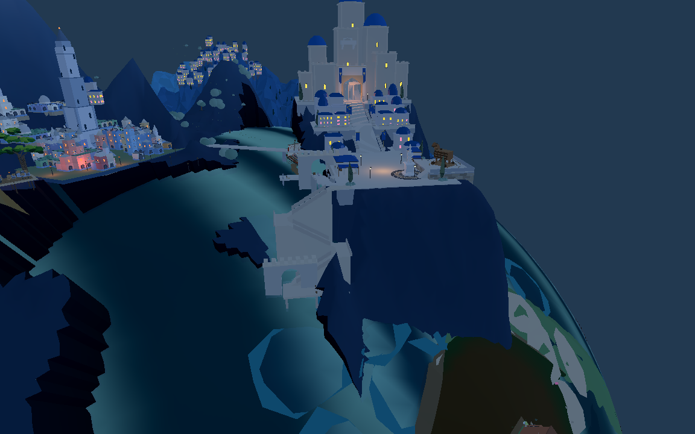

修复前

修复后

之前只同步了地形与建筑，Godot 海面仍是3577顶点/6768三角形的旧网格。现在已同步网页当前18857顶点/37328三角形，后续场景导出同时包含海面。

海岸接合有所改善；前方部分面片仍外露，这不是完整海岸美术验收。未移动营地、未抬高全球海平面、未关闭透明水或删除原地形。
当前Godot数据与8931重新逐项比较，位置、法线、海陆通道、索引、变换与颜色均一致。Godot实际Mesh的通道及反向绕序检查通过。新前港四角在最大波浪下，最小净高约0.711米；原码头及登船平台也通过。
当前两端数据比较 · 旧数据差异 · 引擎海面与码头验证 · 原游戏